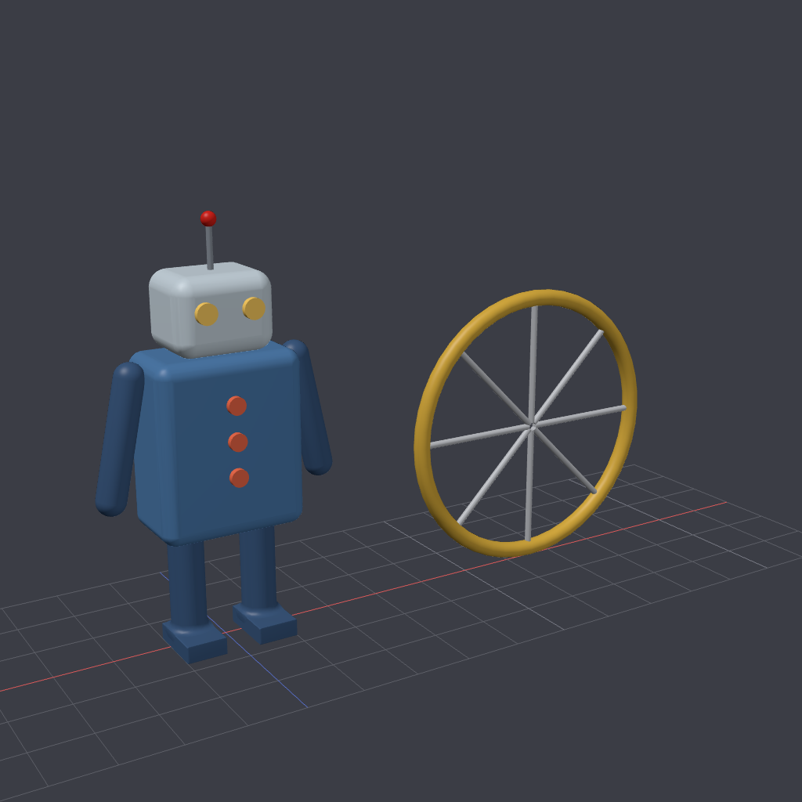
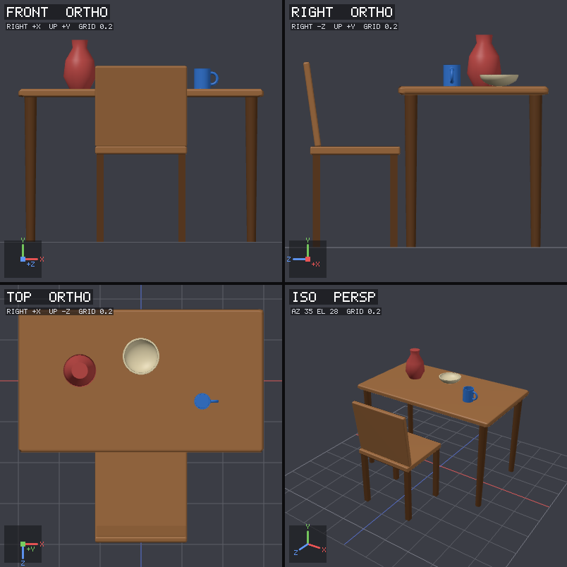

Open source · MCP server
3D modeling for AI agents
Describe a model in plain language. Your agent builds it from real parts, looks at it, measures it, fixes it, and hands you an OBJ file.
npx -y shapeforge install claude-code
Works with any MCP agent. No Node.js? Download a release.

Works with Claude Code · Claude Desktop · GitHub Copilot · Copilot CLI · Cursor · OpenAI Codex · OpenCode · Windsurf
Why shapeforge
Tools like Blender are built for people. shapeforge is built around how language models work.
Describe, don't draw
Parts are short descriptions with real dimensions. No vertices and no scripting.
Sees its own work
Front, side, top and 3D views in one image, labeled with axes and a grid.
Measures exactly
Sizes, gaps and contacts catch what pictures miss, like a part floating 1 mm too high.
Places precisely
Rest parts on surfaces, mirror left to right, repeat in rows or rings.
Boolean shapes
Union, subtract and intersect with smooth blending for holes and handles.
One small binary
C++ with Vulkan rendering and a CPU fallback. Runs on macOS, Windows and Linux.
How it works
A typical session, all inside your normal conversation with the agent.
- Describe. The agent plans named parts such as a seat, four legs and a backrest.
- Build. shapeforge turns each description into a clean mesh.
- See. The agent gets an image of the model from four angles.
- Measure. Exact numbers flag gaps, overlaps and wrong sizes.
- Fix and export. Small edits, then an OBJ and MTL with every part named and colored.

Install
Run one command for your agent, then restart it. shapeforge writes the agent's config for you.
| Agent | Command |
|---|---|
| Claude Code | npx -y shapeforge install claude-code |
| Claude Desktop | npx -y shapeforge install claude-desktop |
| GitHub Copilot (VS Code) | npx -y shapeforge install vscode |
| GitHub Copilot CLI | npx -y shapeforge install copilot-cli |
| Cursor | npx -y shapeforge install cursor |
| OpenAI Codex | npx -y shapeforge install codex |
| OpenCode | npx -y shapeforge install opencode |
| Windsurf | npx -y shapeforge install windsurf |
Without Node.js, download the program for your system from the latest release and run shapeforge install <agent>. Claude Desktop users can also double-click shapeforge.mcpb.
Try asking
Brief the agent the way you would brief a designer.
Model a wooden dining chair, about 45 cm seat height, with a slightly reclined back. Export it as OBJ.
Make a coffee mug with a handle and a saucer. Show me the front and top views before exporting.
Build a desk lamp with a round base, a two-part arm and a cone shade. Make sure nothing floats.
Models are saved in Documents/shapeforge (~/shapeforge on Linux).
Tools
What the agent can call.
| Tool | Purpose |
|---|---|
add_objects | Boxes, spheres, cylinders, cones, capsules, tori, extrusions, lathes, meshes, booleans, groups |
update_objects · delete_objects · undo | Edit, remove, step back |
place_on · align_objects · mirror_object · array_object | Exact placement, symmetry and repetition |
render | Images from any angle, with labels, highlighting and zoom |
inspect | Sizes, positions, volume, contacts and warnings |
export_obj · save_scene · load_scene | OBJ export and editable scene files |